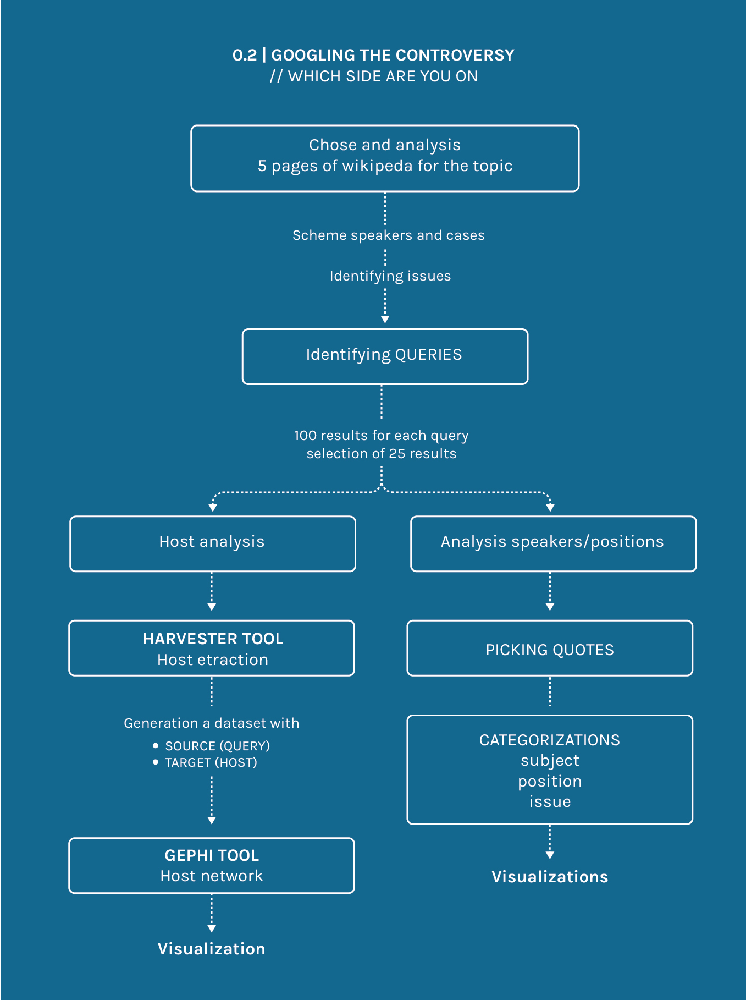

Step of the procotol
As a first step we selected the five more relevant Wikipedia pages for the topic “Right to be forgotten”. For each of these, we analyzed the Wikipedia pages linked (in the See Also sections) and the external webpages we found in the References sections.
We organized the information in a chart, dividing it in different columns: people taking part in the debate, their positions and the main issues, contextualizing these pieces of information by date, geographic area and environment of the speakers.
Once understood these things, we were then able to identify the main issues of the debate and we managed to pick those which caused most of the controversities, so we decided to focus on them for a further in-depth analysis.
Investigating the debate we found the keywords related to the topic, and we managed to select five different queries, chosen in order to easily bring out speakers with a position in the debate.
We entered the queries on google and for each of them we selected the first hundred results, we then reduced them by selecting only the most important twenty-five ones for each query.
We then filled in a new chart, with the following classifications: speakers, positions, issues, contexts.
We decided to create a visualization to show speakers, positions and issues of the debate, to do so we used an alluvial diagram by means of the tool Raw.
With the same dataset we created also a host net, in order to find out the hosts shared by different queries.
To do so we used the tools Harvester and Gephi, with the following process:
input all the urls from the 125 articles selected (Harvester), flag "Only return host names", than download the .csv file (tools.digitalmethods.net/beta/harvestUrls);
Generation a dataset with SOURCE (QUERY), TARGET (HOST); Import the .csv file in Gephi and create the network with the given parameters
visualization
